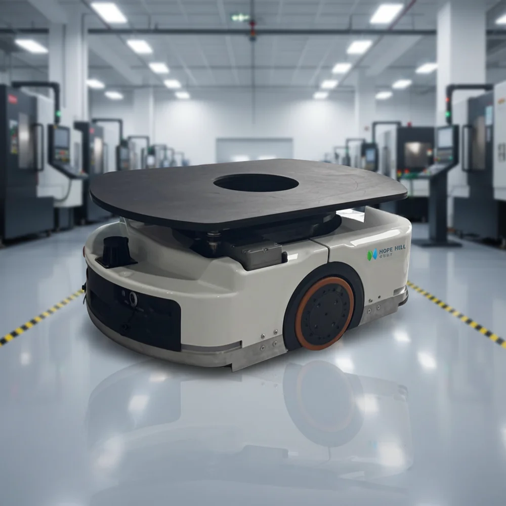

Database · Industrial AMR
Standard Robots
Standard Robots builds industrial autonomous mobile robots (AMRs) that move wafers, parts and materials inside semiconductor and automotive factories.
AMR Industrial Shenzhen

Company Overview
- Standard Robots focuses on high-precision industrial AMRs for semiconductor fabs, automotive lines and electronics manufacturing.
- Its robots perform wafer transport, tool delivery and inline material handling in cleanroom and factory environments.
- The company is a key supplier to China's rapidly growing domestic semiconductor manufacturing base.
Key Facts
| Full Name | Shenzhen Standard Robots Co., Ltd. |
|---|---|
| Chinese Name | 深圳斯坦德机器人有限公司 |
| Founded | 2015 |
| Headquarters | Shenzhen, China |
| Core Products | Industrial AMR, mobile platforms |
| Status | Leading industrial AMR vendor in China |
Actuators & Sensors
- High-precision AMR drive and positioning modules.
- Vision + LiDAR + magnetic navigation options.
- Integration with factory MES/AGV control systems.
Supply-Chain Analysis
- Standard Robots integrates domestic motors, batteries and sensors.
- Semiconductor-grade precision is a key technical moat.
- Localization benefits from China's fab-building boom.
Competitor Comparison
Versus foreign AMR leaders: Standard Robots wins on localization, service and price for Chinese fabs. Versus domestic peers, it leads in semiconductor-grade precision.